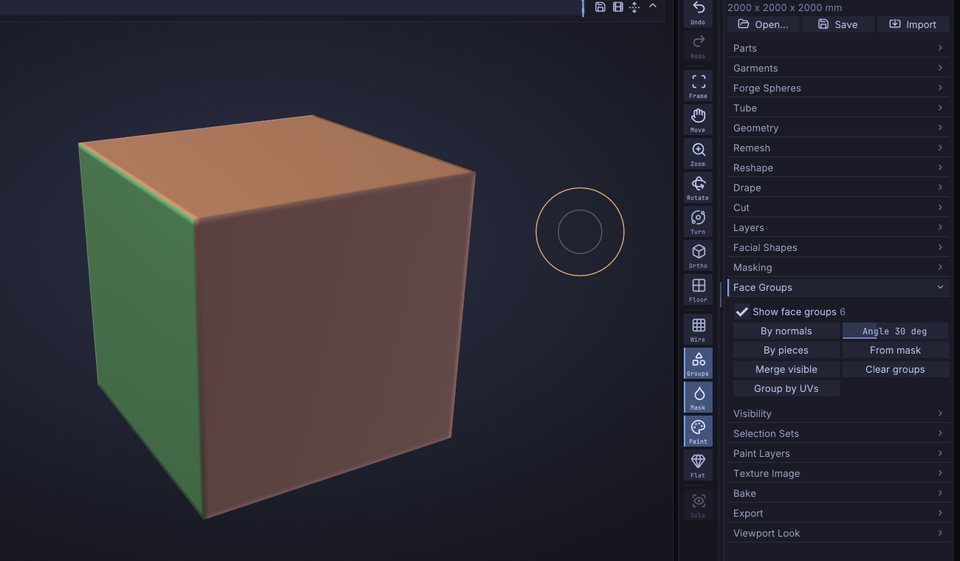

Face Groups and visibility

Face Groups (experienced sculptors: Face groups) divide a Part's surface into named regions, shown as flat colours when you turn them on. You use them to hide and isolate parts of a model so you can reach what you want to sculpt, to build masks, and to split a model into Parts. This chapter covers creating face groups, the Ctrl+Shift visibility gestures and the Tool›Face Groups and Tool›Visibility controls.


Show face groups#
Click Groups in the right shelf to colour each face group of the active Part. The same toggle is Show face groups in Tool›Face Groups and Show Face Groups in the View menu. The grouping buttons turn the colours on for you, so you see the result straight away.
The number next to Show face groups is how many face groups are visible right now.
A mesh without face groups is one group. Face Groups come from:
- the grouping buttons below;
-
OBJ files: each
ggroup becomes a face group (SculptForge also writes face groups asggroups when it exports OBJ); - Bridge files and SculptForge projects, which keep face groups.
Create face groups#
Open Tool›Face Groups. Grouping works on the visible part of the Part only; hidden parts keep their groups. So you can isolate one part and regroup just that part.
| Control | What it does | Command |
|---|---|---|
| By normals | A new group wherever the surface turns more than the angle next to it (1 to 90 degrees, default 30). Each flat side of a box becomes its own group. | facegroup_auto_by_normals |
| By pieces | One group per disconnected piece, such as separate eyes or buttons in one mesh. | facegroup_by_connectivity |
| From mask | Masked triangles move into a new group. | facegroup_from_mask |
| Group by UVs | One group per UV island: triangles that touch without a UV seam between them share a group. Needs UVs (Tool›Texture Image›Auto UV or an imported model's). | facegroup_uv |
| Merge visible | Everything visible becomes one group. | facegroup_merge_visible |
| Clear groups | Remove all face groups; the whole Part becomes one group again. | facegroup_clear |
Each button is one undo step.
Group a region you painted#
- Paint a mask over the region with Ctrl (see Masking).
- Click From mask in Tool›Face Groups.
- Ctrl + drag on the background to clear the mask.
Hide and show parts#
Visibility is the main reason to have face groups: hide what is in the way, sculpt what's left, then show everything again. Hidden parts can't be sculpted, painted or masked, so hiding also protects them.
All of the gestures use Ctrl+Shift in the viewport (Cmd+Shift on macOS):
| Gesture | Effect |
|---|---|
| Ctrl+Shift + click a face group, everything shown | Isolate it: show only that group. |
| Ctrl+Shift + click a face group, something hidden | Hide that group. |
| Ctrl+Shift + click the isolated group again | Invert the visibility: show everything else instead. |
| Ctrl+Shift+Alt + click a face group | Hide that group. |
| Ctrl+Shift + click the background | Show everything. |
| Ctrl+Shift + drag a rectangle on the background, around nothing | Reverse the visibility. |
| Ctrl+Shift + drag | Keep what's inside the rectangle (or lasso), hide the rest. The shape is drawn green. |
| Ctrl+Shift+Alt + drag | Hide what's inside the rectangle (or lasso). The shape is drawn red. |
Whether a drag draws a rectangle or a lasso is set by Select Rectangle and Select Lasso at the top of Tool›Visibility (Select Rectangle by default), or, with Ctrl+Shift held: the left shelf then shows the selection brush, and clicking the brush tile (or pressing B) or the stroke tile picks Select Rectangle or Select Lasso. With Select Lasso, the drag traces a free-hand outline that closes back to where you started; drag around a part as if you were drawing round it with a pen. The drag can start on the model or on the background.
Both shapes work in screen space: a triangle counts as inside when its centre falls inside the shape as you see it, including triangles on the far side of the model. A lasso that crosses itself leaves out the areas it encloses twice. You can press or release Alt while dragging; what counts is whether it is held when you let go.
With symmetry on (X, Y, Z on the top shelf), the mirror image of the shape counts as inside too, as with the mask selections: keeping the left eye keeps the right one, and hiding one ear hides both (hide_rect / hide_lasso symmetry=x).
SculptForge refuses a change that would hide everything. Every visibility change is one undo step, so Ctrl+Z brings back what you just hid.
The Visibility sub-palette#
Open Tool›Visibility:
| Control | What it does | Command |
|---|---|---|
| Select Rectangle / Select Lasso | The shape Ctrl+Shift + drag draws: a rectangle or a free-hand lasso. | hide_rect / hide_lasso |
| Show all | Show every hidden part again. Available when something is hidden. | show_all |
| Invert visible | Hide what is visible and show what is hidden. | invert_visibility |
| Remove Hidden | Permanently remove the hidden triangles from the mesh. Undoable. | delete_hidden |
| Delete masked | Remove the masked triangles (their corners' average mask above 50%). Undoable. Available when something is masked. | delete_masked |
Remove Hidden and Delete masked keep every attribute of what remains (mask, vertex paint, face groups, UVs and sculpt layers). Use it to cut away parts of a scan or a generated model, or to remove the inside of a mesh after you isolated the outside.
Typical workflows#
Work on one part of a character#
- Click By pieces (for a mesh made of separate parts) or By normals.
- Ctrl+Shift + click the part you want, for example the head.
- Sculpt. The rest of the body is hidden and can't be touched.
- Ctrl+Shift + click the background to show everything.
Clean up a scan or a generated model#
- Turn the model so the unwanted piece is on screen.
- Ctrl+Shift+Alt + drag a rectangle over it to hide it. For an awkward shape, pick Select Lasso in Tool›Visibility first and draw around it.
- Click Remove Hidden in Tool›Visibility.
Split a model into Parts#
Group the model, then click Split groups in Tool›Parts: each face group becomes its own Part. Split parts does the same by disconnected piece. See Parts.
Face Groups and other tools#
- Masking: By face group in Tool›Masking masks one group (see Masking).
- Brushes and vertex paint skip hidden faces.
- Projects save face groups and what's hidden; Bridge and OBJ carry face groups in and out.
- Each Part has its own face groups and visibility. To show and hide whole Parts, use the eye icons and Solo in Tool›Parts.
Face Groups from a script#
| Command | Options |
|---|---|
facegroup_auto_by_normals | angle (1-180 degrees, default 30) |
facegroup_by_connectivity, facegroup_uv, facegroup_from_mask, facegroup_merge_visible, facegroup_clear | |
isolate_facegroup, hide_facegroup | group (required): the face group id |
show_all, invert_visibility, delete_hidden | |
hide_rect | x0 y0 x1 y1 (-1 to 1, y up), inside, optional view_proj matrix; without a view the rectangle spans the mesh seen from the front |
hide_lasso | points (required): the outline as "x0 y0 x1 y1 ...", at least 3 points in the same -1 to 1 space; inside, view_proj as for hide_rect |
When you isolate or hide a group in the viewport, the console (`) shows the command with the group's id, for example isolate_facegroup group=3, which you can reuse in scripts.
sculptforge-cli -c 'open path=robot.obj; face group_by_connectivity; part_split_groups; save_project path=robot.sfproj'See also#
- Masking: build masks from face groups and face groups from masks
- Parts: split by groups, show, hide and solo whole Parts
- Keyboard and mouse reference